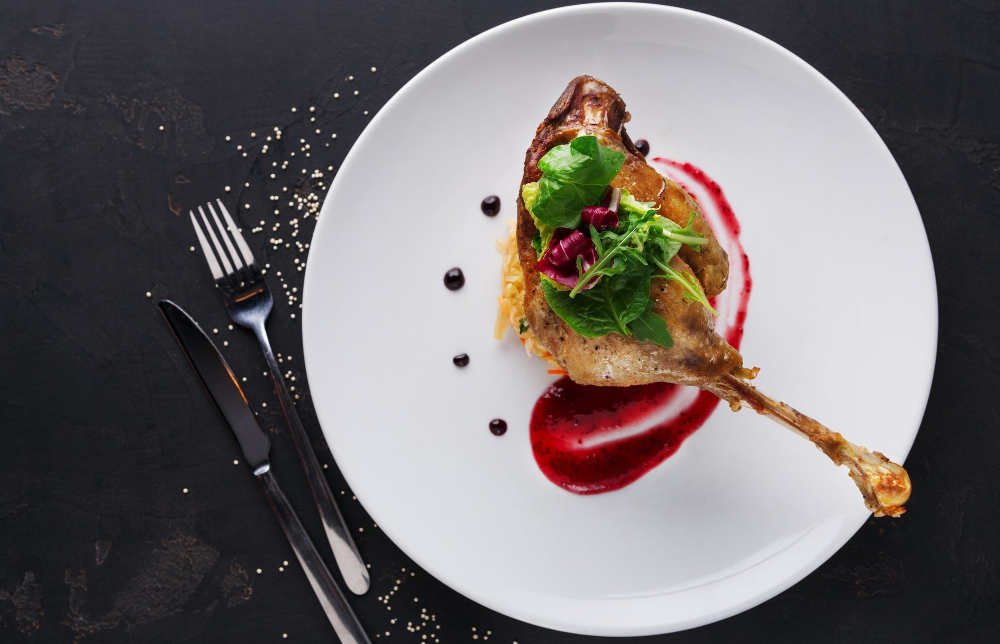

CONFIT DE PATO
INGREDIENTES
- 3 muslos de pato
- 1 chalota
- 2 cucharadas de azúcar moreno
- 1 vaso de coñac
- 1 vaso de vino tinto
- Perejil fresco
- Sal
- Aceite de Oliva Virgen Extra
- 2 manzanas reinetas
- 3 patatas medianas
- 30 gramos de azúcar moreno
- 30 mililitros de ron
- 20 gramos de mantequilla
- 20 gramos de mantequilla
PREPARACIÓN
- Cortar la chalota en juliana.
- En una sartén con una cucharada de aceite mezclar a fuego lento la chalota y el azúcar moreno.
- Añadir el coñac cuando la chalota esté brillante. Cuando la chalota esté bien pochada, apagamos el fuego y reservamos la chalota caramelizada.
- Precalentar el horno durante 5 minutos a 180º.
- Introducir los muslos de pato en el horno bajando la temperatura a 150º durante 1 hora.
- Cuando lleven 30 minutos le damos la vuelta a los muslos y le echamos un chorrito de vino tinto.
- Cuando el pato esté cocinado lo sacamos del horno y le echamos por encima la chalota caramelizada.
- Para el acompañamiento realizamos patatas fritas y compota de manzana.
- Pelar, lavar y cortar las patatas en daditos.
- Dejar 15 minutos en remojo las patatas y secarlas muy bien.
- Freír las patatas en abundante aceite y reservar.
- Para preparar la compota de manzana comenzamos pelando y descorazonando las manzanas.
- Cortar las manzanas en trozos pequeños.
- Cocinar durante 20 minutos en un cazo los trozos de manzana junto con el azúcar moreno, la mantequilla, el ron y una cucharada de agua.
- Triturar la mezcla hasta que se quede con una textura de puré espeso.
- Emplatar el pato con las patatas fritas y la compota.
- Servir y disfrutar.
ARANCINI

INGREDIENTES
- 500 gramos de arroz redondo
- 1.200 mililitros de agua
- 3 yemas de huevo
- 100 gramos de queso parmesano
- 30 gramos de mantequilla
- 300 gramos de salsa boloñesa
- 75 gramos de guisantes
- 100 gramos de mozzarella
- Sal
- 1 puñado de azafrán
- 2 huevos
- Pan rallado
- Aceite de Oliva suave para freír
PREPARACIÓN
- Cocer el arroz en una cazuela hasta que quede tierno y un poco pegajoso.
- Cocer las hebras de azafrán con dos cucharadas de agua mientras que se cuece el arroz. Cuando el agua hierva apagamos el fuego y dejamos enfriar.
- Añadir las yemas al agua de azafrán cuando esté fría. Removemos y reservamos.
- Derretir la mantequilla en el microondas y dejamos enfriar.
- Rallar el queso parmesano y reservamos.
- Cocer los guisantes en una cazuela con una pizca de sal y un chorrito de aceite de oliva. Reservamos.
- Mezclar el arroz con la mezcla de las yemas y el azafrán, la mantequilla derretida y el queso parmesano.
- Extender el arroz en una bandeja amplia y dejamos enfriar.
- Mientras el arroz se enfría, se pueden preparar los ingredientes del relleno para tenerlos a mano a la hora de rellenar. En 3 cuencos diferentes colocamos los guisantes cocidos, la salsa boloñesa y la mozzarella rallada o cortada en trozos pequeños.
- Dar formar los arancini cogiendo una porción de arroz y extendiéndola en la mano a modo de cuenco. En el hueco se coloca el relleno: una porción de salsa, unos pocos guisantes y mozzarella. Tapar el relleno con más arroz dando forma de pera y sin dejar que quede visible el relleno.
- Rebozar los arancinis en huevo y pan alternativamente y se fríen en abundante aceite de oliva.
CORNISH PASTIES
Estos deliciosos pasteles rellenos de carne y verduras son originarios de los condados de Cornualles y Devon.

INGREDIENTES
- 500 gramos de harina de trigo
- 350 gramos de ternera picada
- 175 gramos de nabos o colinabo
- 125 gramos de mantequilla
- 125 gramos de manteca de cerdo
- 2 patatas
- 1 huevo
- Agua
- Agua
- Pimienta
- Pimienta negra molida
PREPARACIÓN
- Corta los 125 gramos de mantequilla recién sacada de la nevera en cubos y ponla en un recipiente junto a los 125 gramos de manteca de cerdo y los 500 gramos de harina de trigo. Amasa con las manos durante unos minutos.
- Agrega 6 cucharadas de agua y sigue amasando hasta que todos los ingredientes se hayan integrado por completo y tengas una masa homogénea y sin grumos.
- Corta la masa en 4 porciones iguales, envuelve cada una de ellas en un poco de papel transparente y mételas en la nevera durante 20 minutos.
- Mientras tanto prepara el relleno. Pon los 350 gramos de carne de ternera picada en un recipiente y sazona con sal y pimienta negra molida al gusto. Remueve con las manos.
- Pela y pica la cebolla en rodajas finas, haciendo lo mismo con las 2 patatas y los 175 gramos de colinabos.
- Incorpora las verduras al recipiente con la carne y mezcla con las manos hasta que los ingredientes se hayan integrado perfectamente entre sí. Reserva para más adelante.
- Saca la masa de la nevera y coloca uno de los cuartos sobre una encimera lisa y ligeramente espolvoreada con un poco de harina. Extiende la masa hasta tener un círculo de, aproximadamente, 25 centímetros de diámetro. Haz lo mismo con todas las porciones de masa.
- En el centro de cada una de las obleas pon una cantidad generosa de relleno con cuidado de no llegar a los bordes del círculo.
- Bate el huevo y con un pincel de cocina pinta la parte exterior del círculo de masa. Luego dobla la oblea por la mitad formando una media luna y sella los bordes presionando con un tenedor.
- Coloca los Cornish Pasties en una bandeja de horno previamente cubierta con papel vegetal y mete en el horno ya calentado a 200ºC.
- Tras 10 minutos, baja la temperatura a 170ºC y deja que los pasteles se horneen durante 45 minutos.
- Cuando estén dorados y crujientes sácalos del horno y sírveselos a tus invitados acompañados de un poco de ensalada y tras una sopa o crema ligera.